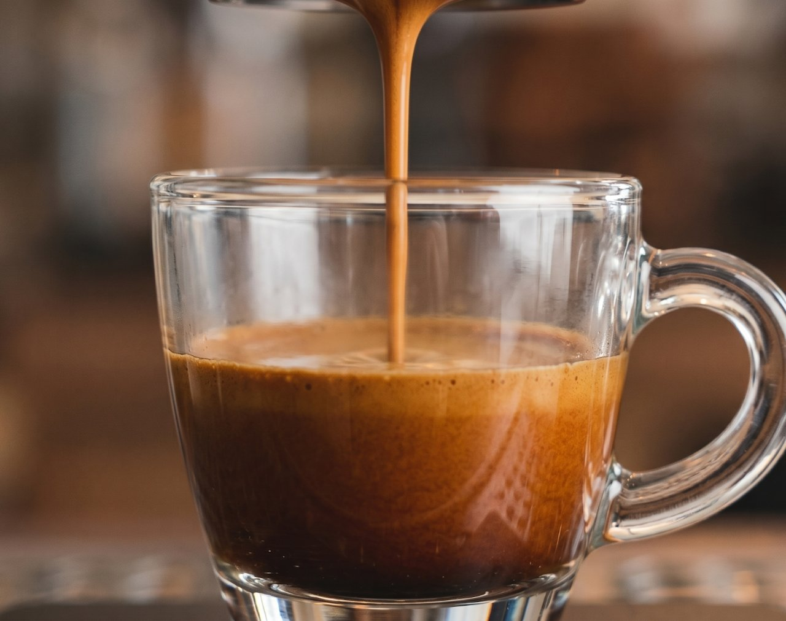
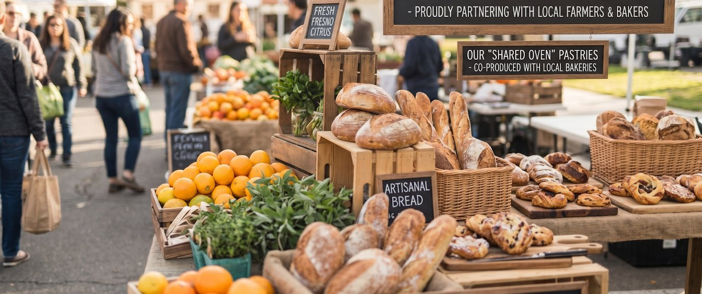
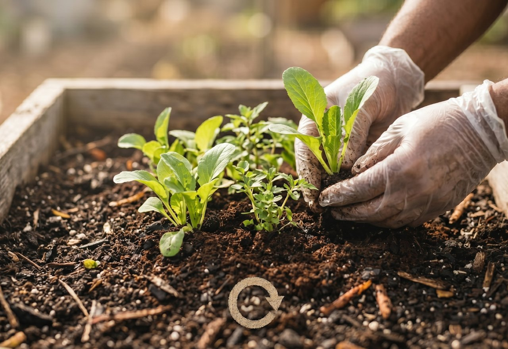
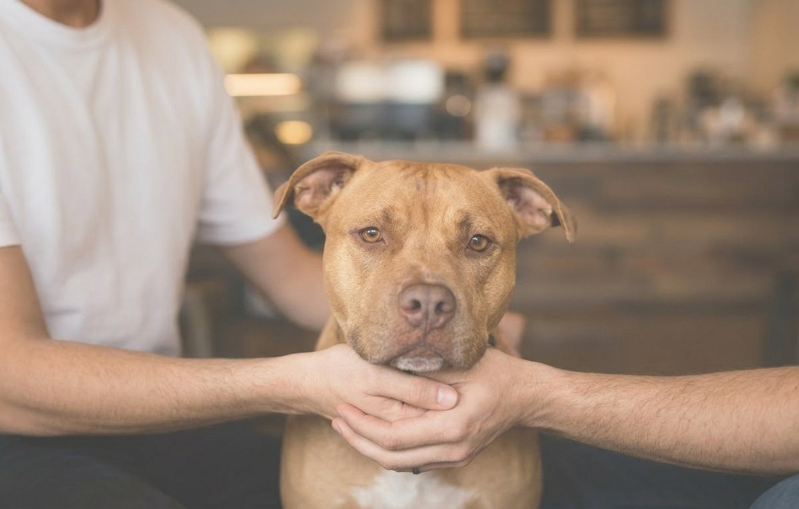

The Why
We didn’t just want to open another cafe. We wanted to build an ecosystem. The CCC: Coffee & Canines Collective is a Fresno-born non-profit where high-end culinary craft meets a relentless mission for animal welfare. We believe the same precision it takes to pull a perfect shot of espresso should be applied to saving lives.
The Radical Localism
"Collective" isn't just in our name—it’s how we operate.
From the Ground Up: We partner directly with our local farmers and producers. By sourcing locally, we aren't just getting fresher ingredients; we’re investing in our neighbors.
The Shared Oven: Why compete when you can collaborate? We work with local bakeries to co-produce our pastries, using shared packaging and resources to keep things sustainable and artisanal.

The Zero-Waste Circle
Our kitchen is a loop, not a line. We employ a Circular Kitchen model—prioritizing low-waste techniques, compostable streams, and repurposing every byproduct we can. We’re here to nourish the community, not the landfill.


The Heart of the Pack
At the end of the day, it’s about the wag. Every penny of our profit goes back into canine rescue and welfare. Whether you’re stopping in for a quick brew or a long afternoon with your pup, you’re fueling a better life for a dog in need.